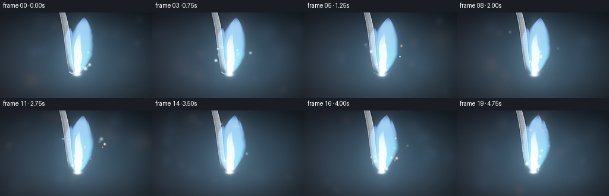
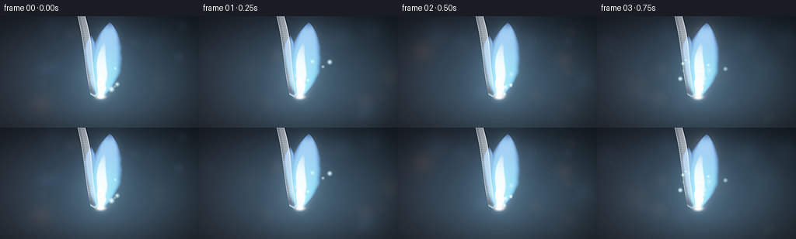
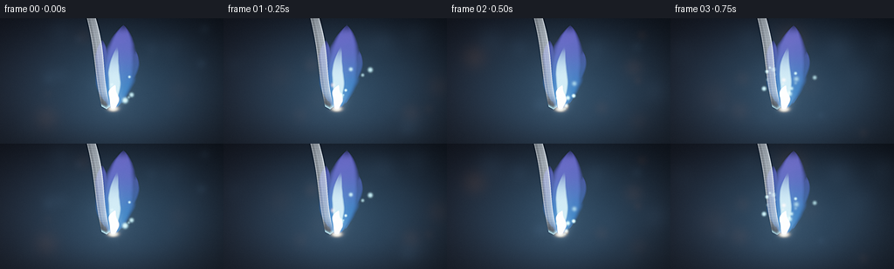
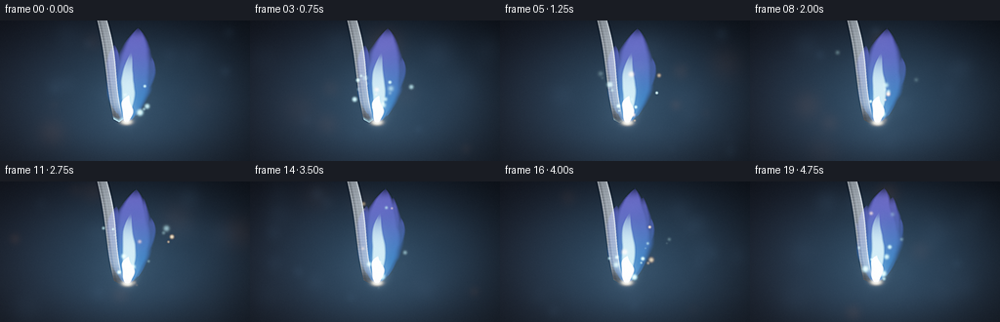

CODING AGENTS AS PIXEL WORLD MODELS
traex/DeepSeek-V4.1-Flash · material_0011
点击播放 · 原生 RGB 像素
逐轮保存的候选
回放视频、检查图与代码变化。
每份候选均可单独播放。实际图片检查记录在下方工具轨迹中。
候选 01播放与检查图
点击播放 · 原生 RGB 像素

展开代码变化
--- 上一保存版本
+++ 本次保存版本
@@ -0,0 +1,238 @@
+from pathlib import Path
+
+import numpy as np
+from PIL import Image, ImageFilter
+from scipy import ndimage
+
+import artifact_io
+
+
+ROOT = Path(__file__).resolve().parent
+WIDTH, HEIGHT, FRAMES, FPS = 256, 144, 20, 4
+SCALE = 4
+W, H = WIDTH * SCALE, HEIGHT * SCALE
+
+
+def smoothstep(edge0, edge1, values):
+ t = np.clip((values - edge0) / (edge1 - edge0), 0.0, 1.0)
+ return t * t * (3.0 - 2.0 * t)
+
+
+def resize_volume(volume, target_shape):
+ factors = tuple(target / source for target, source in zip(target_shape, volume.shape))
+ result = ndimage.zoom(volume, factors, order=3, mode="reflect", prefilter=True)
+ slices = tuple(slice(0, target) for target in target_shape)
+ return np.asarray(result[slices], dtype=np.float32)
+
+
+def make_noise(rng, lattice, sigma):
+ volume = rng.normal(size=lattice).astype(np.float32)
+ volume = ndimage.gaussian_filter(volume, sigma=sigma, mode="reflect")
+ return resize_volume(volume, (FRAMES, H, W))
+
+
+def add_glow(canvas, cx, cy, sigma, color, strength):
+ radius = max(3, int(sigma * 4.0))
+ x0, x1 = max(0, int(cx) - radius), min(W, int(cx) + radius + 1)
+ y0, y1 = max(0, int(cy) - radius), min(H, int(cy) + radius + 1)
+ if x0 >= x1 or y0 >= y1:
+ return
+ yy, xx = np.mgrid[y0:y1, x0:x1]
+ spot = np.exp(-((xx - cx) ** 2 + (yy - cy) ** 2) / (2.0 * sigma * sigma))
+ canvas[y0:y1, x0:x1] += spot[..., None] * np.asarray(color, dtype=np.float32) * strength
+
+
+def plume(xx, yy, x0, y0, height, base_width, growth, lean, sway, phase, noise, strength=1.0):
+ s = (y0 - yy) / height
+ valid = (s >= 0.0) & (s <= 1.04)
+ sc = np.clip(s, 0.0, 1.0)
+ center = (
+ x0
+ + lean * sc
+ + sway * np.sin(3.2 * sc + phase) * sc
+ + 0.008 * W * np.sin(8.0 * sc - 0.7 * phase) * sc
+ )
+ width = base_width * (1.0 - 0.92 * sc) + growth * np.power(np.sin(np.pi * sc), 0.72)
+ width = np.maximum(width, 0.7)
+ edge = (noise - 0.5) * (0.26 + 0.34 * np.sin(np.pi * sc))
+ distance = np.abs(xx - center) / width + edge
+ body = 1.0 - smoothstep(0.57, 1.02, distance)
+ envelope = smoothstep(-0.015, 0.035, s) * (1.0 - smoothstep(0.88, 1.03, s))
+ texture = 0.74 + 0.26 * smoothstep(-0.45, 0.55, noise)
+ return np.where(valid, body * envelope * texture * strength, 0.0).astype(np.float32)
+
+
+def make_background(xx, yy, noise, rng):
+ ynorm = yy / H
+ xnorm = xx / W
+ rgb = np.empty((H, W, 3), dtype=np.float32)
+ rgb[..., 0] = 0.004 + 0.010 * ynorm + 0.004 * (1.0 - xnorm)
+ rgb[..., 1] = 0.008 + 0.014 * ynorm + 0.003 * (1.0 - xnorm)
+ rgb[..., 2] = 0.013 + 0.019 * ynorm + 0.005 * (1.0 - xnorm)
+
+ glow = np.exp(-(((xx - 0.53 * W) / (0.34 * W)) ** 2 + ((yy - 0.60 * H) / (0.42 * H)) ** 2))
+ rgb += glow[..., None] * np.array([0.018, 0.050, 0.080], dtype=np.float32)
+
+ smoke = smoothstep(-0.4, 0.8, noise)
+ veil = np.exp(-((xx - (0.54 * W + 0.07 * W * (yy / H))) / (0.23 * W)) ** 2)
+ veil *= smoothstep(0.02, 0.40, yy / H) * (1.0 - smoothstep(0.74, 1.0, yy / H))
+ rgb += (smoke * veil * 0.010)[..., None] * np.array([0.45, 0.65, 1.0], dtype=np.float32)
+
+ for _ in range(16):
+ cx = rng.uniform(0.04, 0.96) * W
+ cy = rng.uniform(0.06, 0.94) * H
+ sigma = rng.uniform(3.0, 12.0) * SCALE
+ tint = np.array([0.25, 0.55, 1.0], dtype=np.float32)
+ if rng.random() < 0.28:
+ tint = np.array([1.0, 0.56, 0.24], dtype=np.float32)
+ add_glow(rgb, cx, cy, sigma, tint, rng.uniform(0.004, 0.017))
+ return rgb
+
+
+def strip_layer(xx, yy, y0, noise):
+ s = yy / H
+ center = W * (0.405 + 0.105 * s + 0.007 * np.sin(7.0 * s + 0.5))
+ half = W * (0.0205 * (1.0 - 0.26 * smoothstep(0.72, 1.0, s)) + 0.0015 * np.sin(8.0 * s))
+ u = (xx - center) / half
+ bottom = y0 - 0.018 * H + 0.022 * H * (1.0 - np.clip(np.abs(u), 0.0, 1.0))
+ mask = ((np.abs(u) <= 1.0) & (yy <= bottom)).astype(np.float32)
+
+ side = np.clip((u + 1.0) * 0.5, 0.0, 1.0)
+ brushed = 0.025 * np.sin(yy * 0.55 + 5.0 * noise) + 0.018 * np.sin(yy * 1.73 - 3.0 * noise)
+ metal = 0.18 + 0.33 * side + brushed
+ edge = 0.24 * np.exp(-((np.abs(u) - 0.84) / 0.075) ** 2)
+ crease = 0.10 * np.exp(-((u + 0.12) / 0.12) ** 2)
+ shade = np.clip(metal + edge + crease, 0.04, 0.80)
+ rgb = shade[..., None] * np.array([0.72, 0.84, 0.98], dtype=np.float32)
+
+ blue_reflection = smoothstep(0.36, 0.76, s) * (0.45 + 0.55 * side)
+ rgb += blue_reflection[..., None] * np.array([0.035, 0.15, 0.28], dtype=np.float32)
+
+ char = smoothstep(y0 - 0.16 * H, y0 - 0.025 * H, yy)
+ char_pattern = smoothstep(-0.3, 0.7, noise)
+ char_color = np.array([0.022, 0.020, 0.020], dtype=np.float32)
+ char_color = char_color + char_pattern[..., None] * np.array([0.035, 0.025, 0.022], dtype=np.float32)
+ rgb = rgb * (1.0 - 0.92 * char[..., None]) + char_color * 0.92 * char[..., None]
+
+ rim_band = np.exp(-((bottom - yy) / (2.4 * SCALE)) ** 2)
+ rgb += (rim_band * mask * smoothstep(-0.2, 0.6, noise))[..., None] * np.array(
+ [0.35, 0.78, 1.0], dtype=np.float32
+ )
+ return mask, rgb
+
+
+def render_frame(index, coarse_noise, fine_noise, spark_rng):
+ noise = np.clip(0.68 * coarse_noise[index] + 0.32 * fine_noise[index], -1.3, 1.3)
+ noise01 = 0.5 + 0.5 * np.tanh(noise)
+ yy, xx = np.mgrid[0:H, 0:W].astype(np.float32)
+ t = index / FPS
+
+ rgb = make_background(xx, yy, noise, np.random.default_rng(2200 + index))
+
+ x0 = 0.505 * W + 1.2 * SCALE * np.sin(0.65 * t + 0.2)
+ y0 = 0.720 * H + 0.8 * SCALE * np.sin(0.9 * t)
+
+ strip_mask, strip_rgb = strip_layer(xx, yy, y0, noise)
+ rgb = rgb * (1.0 - strip_mask[..., None]) + strip_rgb * strip_mask[..., None]
+
+ main = plume(
+ xx, yy, x0, y0, 0.665 * H, 3.0 * SCALE, 20.5 * SCALE,
+ 10.5 * SCALE, 3.3 * SCALE, 0.2 + 0.34 * t, noise01, 1.0,
+ )
+ left = plume(
+ xx, yy, x0 - 2.5 * SCALE, y0 - 1.0 * SCALE, 0.54 * H, 2.2 * SCALE, 12.0 * SCALE,
+ -6.5 * SCALE, 4.5 * SCALE, 1.8 + 0.30 * t, noise01, 0.66,
+ )
+ right = plume(
+ xx, yy, x0 + 3.2 * SCALE, y0 - 2.0 * SCALE, 0.59 * H, 2.0 * SCALE, 14.0 * SCALE,
+ 13.0 * SCALE, 2.7 * SCALE, 3.1 + 0.28 * t, noise01, 0.72,
+ )
+ outer = np.maximum.reduce([main, left, right])
+
+ core = plume(
+ xx, yy, x0 - 0.4 * SCALE, y0 - 1.0 * SCALE, 0.49 * H, 1.4 * SCALE, 6.6 * SCALE,
+ 3.8 * SCALE, 1.1 * SCALE, 0.7 + 0.30 * t, noise01, 1.0,
+ )
+ core *= 1.0 - smoothstep(0.42, 0.98, (y0 - yy) / (0.55 * H))
+ hot = plume(
+ xx, yy, x0, y0, 0.19 * H, 1.8 * SCALE, 5.2 * SCALE,
+ 1.2 * SCALE, 0.5 * SCALE, 1.3 + 0.32 * t, noise01, 1.0,
+ )
+
+ s = np.clip((y0 - yy) / (0.66 * H), 0.0, 1.0)
+ violet = outer * smoothstep(0.16, 0.92, s) * (0.55 + 0.45 * noise01)
+ cyan = outer * (0.50 + 0.50 * (1.0 - smoothstep(0.18, 0.78, s)))
+
+ emission = np.zeros_like(rgb)
+ emission += outer[..., None] * np.array([0.07, 0.32, 0.95], dtype=np.float32) * 0.75
+ emission += cyan[..., None] * np.array([0.16, 0.68, 1.0], dtype=np.float32) * 0.72
+ emission += violet[..., None] * np.array([0.40, 0.14, 0.92], dtype=np.float32) * 0.38
+ emission += core[..., None] * np.array([0.75, 0.94, 1.0], dtype=np.float32) * 1.55
+ emission += hot[..., None] * np.array([0.92, 0.99, 1.0], dtype=np.float32) * 2.30
+
+ ignition = np.exp(
+ -(((xx - x0) / (4.2 * SCALE)) ** 2 + ((yy - y0) / (2.3 * SCALE)) ** 2)
+ )
+ emission += ignition[..., None] * np.array([1.0, 0.96, 0.82], dtype=np.float32) * 2.4
+
+ for i in range(34):
+ birth = spark_rng.uniform(-5.0, 22.0)
+ age = index - birth
+ life = spark_rng.uniform(4.5, 12.0)
+ if age < 0.0 or age > life:
+ continue
+ life_t = age / life
+ vx = spark_rng.uniform(-0.8, 1.2) * W / 45.0
+ vy = spark_rng.uniform(1.4, 3.5) * H / 45.0
+ sx = x0 + spark_rng.uniform(-0.028, 0.032) * W + vx * age
+ sy = y0 + spark_rng.uniform(-0.014, 0.006) * H - vy * age + 0.9 * age * age
+ sx += 2.5 * SCALE * np.sin(0.9 * age + i * 1.7) * life_t
+ sigma = spark_rng.uniform(0.7, 1.8) * SCALE
+ fade = (1.0 - life_t) ** 1.4 * smoothstep(0.0, 0.12, life_t)
+ tint = np.array([1.0, 0.78, 0.48], dtype=np.float32) if i % 4 == 0 else np.array(
+ [0.48, 0.86, 1.0], dtype=np.float32
+ )
+ add_glow(emission, sx, sy, sigma, tint, 2.4 * fade)
+ if i % 3 == 0:
+ add_glow(emission, sx - vx * 0.55, sy + vy * 0.55, sigma * 0.65, tint, 0.85 * fade)
+
+ rgb += emission
+ luminance = np.maximum.reduce((emission[..., 0], emission[..., 1], emission[..., 2]))
+ hot_pixels = np.maximum(luminance - 0.65, 0.0)
+ bloom_small = ndimage.gaussian_filter(hot_pixels, 5.0 * SCALE)
+ bloom_large = ndimage.gaussian_filter(hot_pixels, 20.0 * SCALE)
+ bloom = 0.22 * bloom_small + 0.13 * bloom_large
+ rgb += bloom[..., None] * np.array([0.35, 0.66, 1.0], dtype=np.float32)
+
+ exposure = 1.55
+ rgb = 1.0 - np.exp(-np.maximum(rgb, 0.0) * exposure)
+ rgb = np.power(np.clip(rgb, 0.0, 1.0), 1.0 / 2.2)
+
+ vignette = 1.0 - 0.46 * smoothstep(0.30, 0.86, ((xx / W - 0.5) ** 2 + (yy / H - 0.5) ** 2) ** 0.5)
+ rgb *= vignette[..., None]
+
+ grain_rng = np.random.default_rng(8100 + index)
+ grain = grain_rng.normal(0.0, 0.008, (H, W, 1)).astype(np.float32)
+ rgb = np.clip(rgb + grain, 0.0, 1.0)
+ return np.round(rgb * 255.0).astype(np.uint8)
+
+
+def main():
+ rng = np.random.default_rng(4371)
+ coarse = make_noise(rng, (7, 18, 26), (0.65, 1.0, 1.0))
+ fine = make_noise(rng, (10, 48, 68), (0.70, 0.95, 0.95))
+ spark_rng = np.random.default_rng(90210)
+
+ frames = []
+ for index in range(FRAMES):
+ large = render_frame(index, coarse, fine, spark_rng)
+ image = Image.fromarray(large).resize((WIDTH, HEIGHT), Image.Resampling.LANCZOS)
+ image = image.filter(ImageFilter.UnsharpMask(radius=0.9, percent=65, threshold=2))
+ frames.append(np.asarray(image, dtype=np.uint8))
+
+ artifact_io.save(np.stack(frames), ROOT)
+ print(f"wrote {FRAMES} frames at {WIDTH}x{HEIGHT}, {FPS} fps")
+
+
+if __name__ == "__main__":
+ main()
候选 02播放与检查图
点击播放 · 原生 RGB 像素


展开代码变化
--- 上一保存版本
+++ 本次保存版本
@@ -66,17 +66,17 @@
ynorm = yy / H
xnorm = xx / W
rgb = np.empty((H, W, 3), dtype=np.float32)
- rgb[..., 0] = 0.004 + 0.010 * ynorm + 0.004 * (1.0 - xnorm)
- rgb[..., 1] = 0.008 + 0.014 * ynorm + 0.003 * (1.0 - xnorm)
- rgb[..., 2] = 0.013 + 0.019 * ynorm + 0.005 * (1.0 - xnorm)
+ rgb[..., 0] = 0.002 + 0.005 * ynorm + 0.002 * (1.0 - xnorm)
+ rgb[..., 1] = 0.004 + 0.008 * ynorm + 0.002 * (1.0 - xnorm)
+ rgb[..., 2] = 0.009 + 0.014 * ynorm + 0.004 * (1.0 - xnorm)
glow = np.exp(-(((xx - 0.53 * W) / (0.34 * W)) ** 2 + ((yy - 0.60 * H) / (0.42 * H)) ** 2))
- rgb += glow[..., None] * np.array([0.018, 0.050, 0.080], dtype=np.float32)
+ rgb += glow[..., None] * np.array([0.010, 0.034, 0.064], dtype=np.float32)
smoke = smoothstep(-0.4, 0.8, noise)
veil = np.exp(-((xx - (0.54 * W + 0.07 * W * (yy / H))) / (0.23 * W)) ** 2)
veil *= smoothstep(0.02, 0.40, yy / H) * (1.0 - smoothstep(0.74, 1.0, yy / H))
- rgb += (smoke * veil * 0.010)[..., None] * np.array([0.45, 0.65, 1.0], dtype=np.float32)
+ rgb += (smoke * veil * 0.007)[..., None] * np.array([0.42, 0.62, 1.0], dtype=np.float32)
for _ in range(16):
cx = rng.uniform(0.04, 0.96) * W
@@ -85,7 +85,7 @@
tint = np.array([0.25, 0.55, 1.0], dtype=np.float32)
if rng.random() < 0.28:
tint = np.array([1.0, 0.56, 0.24], dtype=np.float32)
- add_glow(rgb, cx, cy, sigma, tint, rng.uniform(0.004, 0.017))
+ add_glow(rgb, cx, cy, sigma, tint, rng.uniform(0.002, 0.011))
return rgb
@@ -105,8 +105,8 @@
shade = np.clip(metal + edge + crease, 0.04, 0.80)
rgb = shade[..., None] * np.array([0.72, 0.84, 0.98], dtype=np.float32)
- blue_reflection = smoothstep(0.36, 0.76, s) * (0.45 + 0.55 * side)
- rgb += blue_reflection[..., None] * np.array([0.035, 0.15, 0.28], dtype=np.float32)
+ blue_reflection = smoothstep(0.42, 0.82, s) * (0.40 + 0.60 * side)
+ rgb += blue_reflection[..., None] * np.array([0.025, 0.11, 0.22], dtype=np.float32)
char = smoothstep(y0 - 0.16 * H, y0 - 0.025 * H, yy)
char_pattern = smoothstep(-0.3, 0.7, noise)
@@ -147,7 +147,15 @@
xx, yy, x0 + 3.2 * SCALE, y0 - 2.0 * SCALE, 0.59 * H, 2.0 * SCALE, 14.0 * SCALE,
13.0 * SCALE, 2.7 * SCALE, 3.1 + 0.28 * t, noise01, 0.72,
)
- outer = np.maximum.reduce([main, left, right])
+ left_tip = plume(
+ xx, yy, x0 - 8.0 * SCALE, y0 - 8.0 * SCALE, 0.37 * H, 1.4 * SCALE, 7.2 * SCALE,
+ -12.0 * SCALE, 3.0 * SCALE, 4.6 + 0.36 * t, noise01, 0.43,
+ )
+ right_tip = plume(
+ xx, yy, x0 + 9.0 * SCALE, y0 - 6.0 * SCALE, 0.43 * H, 1.3 * SCALE, 7.8 * SCALE,
+ 16.0 * SCALE, 2.5 * SCALE, 5.7 + 0.32 * t, noise01, 0.48,
+ )
+ outer = np.maximum.reduce([main, left, right, left_tip, right_tip])
core = plume(
xx, yy, x0 - 0.4 * SCALE, y0 - 1.0 * SCALE, 0.49 * H, 1.4 * SCALE, 6.6 * SCALE,
@@ -164,16 +172,16 @@
cyan = outer * (0.50 + 0.50 * (1.0 - smoothstep(0.18, 0.78, s)))
emission = np.zeros_like(rgb)
- emission += outer[..., None] * np.array([0.07, 0.32, 0.95], dtype=np.float32) * 0.75
- emission += cyan[..., None] * np.array([0.16, 0.68, 1.0], dtype=np.float32) * 0.72
- emission += violet[..., None] * np.array([0.40, 0.14, 0.92], dtype=np.float32) * 0.38
- emission += core[..., None] * np.array([0.75, 0.94, 1.0], dtype=np.float32) * 1.55
- emission += hot[..., None] * np.array([0.92, 0.99, 1.0], dtype=np.float32) * 2.30
+ emission += outer[..., None] * np.array([0.015, 0.105, 0.90], dtype=np.float32) * 0.24
+ emission += cyan[..., None] * np.array([0.035, 0.44, 1.00], dtype=np.float32) * 0.23
+ emission += violet[..., None] * np.array([0.42, 0.045, 0.94], dtype=np.float32) * 0.24
+ emission += core[..., None] * np.array([0.58, 0.92, 1.0], dtype=np.float32) * 1.05
+ emission += hot[..., None] * np.array([0.96, 0.99, 1.0], dtype=np.float32) * 2.20
ignition = np.exp(
-(((xx - x0) / (4.2 * SCALE)) ** 2 + ((yy - y0) / (2.3 * SCALE)) ** 2)
)
- emission += ignition[..., None] * np.array([1.0, 0.96, 0.82], dtype=np.float32) * 2.4
+ emission += ignition[..., None] * np.array([1.0, 0.92, 0.74], dtype=np.float32) * 1.55
for i in range(34):
birth = spark_rng.uniform(-5.0, 22.0)
@@ -201,7 +209,7 @@
hot_pixels = np.maximum(luminance - 0.65, 0.0)
bloom_small = ndimage.gaussian_filter(hot_pixels, 5.0 * SCALE)
bloom_large = ndimage.gaussian_filter(hot_pixels, 20.0 * SCALE)
- bloom = 0.22 * bloom_small + 0.13 * bloom_large
+ bloom = 0.15 * bloom_small + 0.065 * bloom_large
rgb += bloom[..., None] * np.array([0.35, 0.66, 1.0], dtype=np.float32)
exposure = 1.55
候选 03播放与检查图
点击播放 · 原生 RGB 像素
展开代码变化
代码未变化；重新保存了产物。
候选 04播放与检查图
点击播放 · 原生 RGB 像素

展开代码变化
代码未变化；重新保存了产物。
候选 05播放与检查图
点击播放 · 原生 RGB 像素


展开代码变化
--- 上一保存版本
+++ 本次保存版本
@@ -54,11 +54,11 @@
)
width = base_width * (1.0 - 0.92 * sc) + growth * np.power(np.sin(np.pi * sc), 0.72)
width = np.maximum(width, 0.7)
- edge = (noise - 0.5) * (0.26 + 0.34 * np.sin(np.pi * sc))
+ edge = (noise - 0.5) * (0.12 + 0.19 * np.sin(np.pi * sc))
distance = np.abs(xx - center) / width + edge
- body = 1.0 - smoothstep(0.57, 1.02, distance)
- envelope = smoothstep(-0.015, 0.035, s) * (1.0 - smoothstep(0.88, 1.03, s))
- texture = 0.74 + 0.26 * smoothstep(-0.45, 0.55, noise)
+ body = 1.0 - smoothstep(0.44, 1.03, distance)
+ envelope = smoothstep(-0.015, 0.035, s) * (1.0 - smoothstep(0.90, 1.03, s))
+ texture = 0.82 + 0.18 * smoothstep(-0.45, 0.55, noise)
return np.where(valid, body * envelope * texture * strength, 0.0).astype(np.float32)
@@ -122,7 +122,7 @@
def render_frame(index, coarse_noise, fine_noise, spark_rng):
- noise = np.clip(0.68 * coarse_noise[index] + 0.32 * fine_noise[index], -1.3, 1.3)
+ noise = np.clip(0.82 * coarse_noise[index] + 0.18 * fine_noise[index], -1.2, 1.2)
noise01 = 0.5 + 0.5 * np.tanh(noise)
yy, xx = np.mgrid[0:H, 0:W].astype(np.float32)
t = index / FPS
@@ -172,18 +172,18 @@
cyan = outer * (0.50 + 0.50 * (1.0 - smoothstep(0.18, 0.78, s)))
emission = np.zeros_like(rgb)
- emission += outer[..., None] * np.array([0.015, 0.105, 0.90], dtype=np.float32) * 0.24
- emission += cyan[..., None] * np.array([0.035, 0.44, 1.00], dtype=np.float32) * 0.23
- emission += violet[..., None] * np.array([0.42, 0.045, 0.94], dtype=np.float32) * 0.24
- emission += core[..., None] * np.array([0.58, 0.92, 1.0], dtype=np.float32) * 1.05
- emission += hot[..., None] * np.array([0.96, 0.99, 1.0], dtype=np.float32) * 2.20
+ emission += outer[..., None] * np.array([0.012, 0.075, 0.78], dtype=np.float32) * 0.30
+ emission += cyan[..., None] * np.array([0.025, 0.36, 1.00], dtype=np.float32) * 0.27
+ emission += violet[..., None] * np.array([0.34, 0.035, 0.86], dtype=np.float32) * 0.28
+ emission += core[..., None] * np.array([0.42, 0.83, 1.0], dtype=np.float32) * 0.78
+ emission += hot[..., None] * np.array([0.88, 0.97, 1.0], dtype=np.float32) * 1.65
ignition = np.exp(
-(((xx - x0) / (4.2 * SCALE)) ** 2 + ((yy - y0) / (2.3 * SCALE)) ** 2)
)
emission += ignition[..., None] * np.array([1.0, 0.92, 0.74], dtype=np.float32) * 1.55
- for i in range(34):
+ for i in range(46):
birth = spark_rng.uniform(-5.0, 22.0)
age = index - birth
life = spark_rng.uniform(4.5, 12.0)
@@ -200,19 +200,20 @@
tint = np.array([1.0, 0.78, 0.48], dtype=np.float32) if i % 4 == 0 else np.array(
[0.48, 0.86, 1.0], dtype=np.float32
)
- add_glow(emission, sx, sy, sigma, tint, 2.4 * fade)
+ add_glow(emission, sx, sy, sigma, tint, 2.9 * fade)
if i % 3 == 0:
- add_glow(emission, sx - vx * 0.55, sy + vy * 0.55, sigma * 0.65, tint, 0.85 * fade)
+ add_glow(emission, sx - vx * 0.55, sy + vy * 0.55, sigma * 0.58, tint, 1.05 * fade)
+ add_glow(emission, sx - vx * 1.10, sy + vy * 1.10, sigma * 0.42, tint, 0.34 * fade)
rgb += emission
luminance = np.maximum.reduce((emission[..., 0], emission[..., 1], emission[..., 2]))
hot_pixels = np.maximum(luminance - 0.65, 0.0)
bloom_small = ndimage.gaussian_filter(hot_pixels, 5.0 * SCALE)
bloom_large = ndimage.gaussian_filter(hot_pixels, 20.0 * SCALE)
- bloom = 0.15 * bloom_small + 0.065 * bloom_large
+ bloom = 0.11 * bloom_small + 0.045 * bloom_large
rgb += bloom[..., None] * np.array([0.35, 0.66, 1.0], dtype=np.float32)
- exposure = 1.55
+ exposure = 1.38
rgb = 1.0 - np.exp(-np.maximum(rgb, 0.0) * exposure)
rgb = np.power(np.clip(rgb, 0.0, 1.0), 1.0 / 2.2)
候选 06播放与检查图
点击播放 · 原生 RGB 像素
展开代码变化
代码未变化；重新保存了产物。
候选 07播放与检查图
可观测工具轨迹
实际执行的命令与返回图片。
命令 1exit 0
/bin/bash -c "pwd && rg --files -g 'prompt.txt' -g 'GENERATION_RULES.md' -g 'task_spec.json' -g '"'!**/.git/**'"'"
命令 2exit 0
/bin/bash -c 'git status --short'
命令 3exit 0
/bin/bash -c 'ls -la'
命令 4exit 0
/bin/bash -c 'cat prompt.txt'
命令 5exit 0
/bin/bash -c 'cat GENERATION_RULES.md'
命令 6exit 0
/bin/bash -c 'cat task_spec.json'
命令 7exit 0
/bin/bash -c "sed -n '1,240p' artifact_io.py"
命令 8exit 0
/bin/bash -c "sed -n '1,240p' player_template.html"
命令 9exit 0
/bin/bash -c "python - <<'PY'
import numpy, PIL
print('numpy', numpy.__version__)
print('PIL', PIL.__version__)
try:
import scipy; print('scipy', scipy.__version__)
except Exception as e: print('no scipy', e)
PY"命令 10exit 0
/bin/bash -c 'python generate.py'
命令 11exit 0
/bin/bash -c 'python generate.py'
命令 12exit 0
/bin/bash -c 'python generate.py'
命令 13exit 0
/bin/bash -c "python - <<'PY'
import json
from pathlib import Path
import numpy as np
from PIL import Image
root=Path('.')
frames=sorted((root/'frames').glob('*.png'))
arr=np.stack([np.asarray(Image.open(p).convert('RGB')) for p in frames])
print('frames', len(frames), 'shape', arr.shape, 'dtype', arr.dtype)
print('per-frame means', np.round(arr.mean(axis=(1,2,3)),2).tolist())
print('temporal mean abs delta', round(float(np.abs(np.diff(arr.astype(np.float32),axis=0)).mean()),3))
print('pixels.npz', (root/'pixels.npz').stat().st_size, 'bytes')
print('index.html', (root/'index.html').stat().st_size, 'bytes')
print('spec', json.loads((root/'task_spec.json').read_text()))
PY"视觉工具实际返回图片 1

视觉工具实际返回图片 2
视觉工具实际返回图片 3

视觉工具实际返回图片 4
视觉工具实际返回图片 5
视觉工具实际返回图片 6

视觉工具实际返回图片 7

保存候选 7 份；完成命令 13 次；可验证图片返回 7 张。原始 API 响应与完整日志保留在本地。